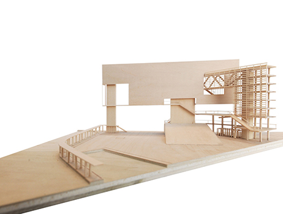
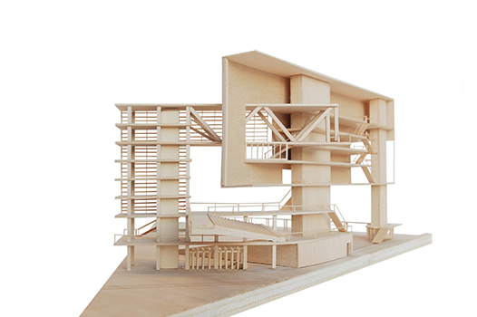
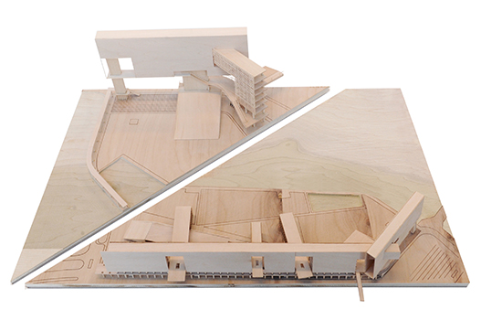

tsim sha tsui, hong kong / 2011
Hong Kong Hybrid is a new cultural and commercial center sited along the Hong Kong waterfront. By condensing program into a slim volume the design frees up the rest of the waterfront for a public park. The building simultaneously acts as a billboard and buffer in relation to the rest of the city. On the ground level is an arcade with shops while offices and conference rooms occupy the top levels of the slab. Cultural Programs are distributed within a series of bars that plug into the wall.
awards: architizer pop prize, enr best education project